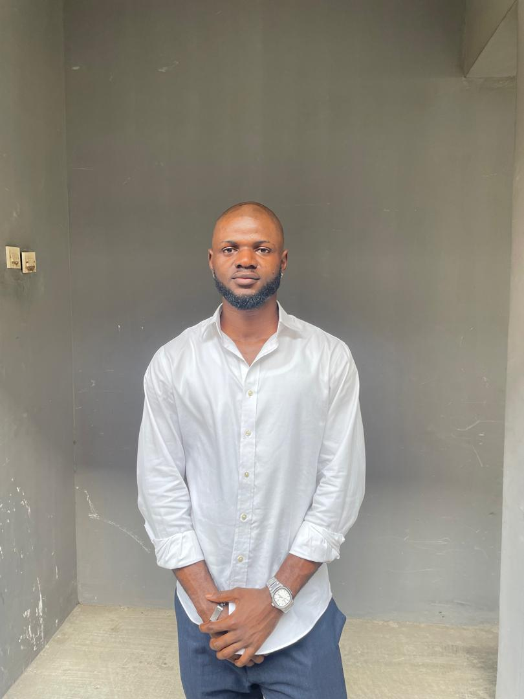

Hello! My name is Okorie Emmanuel and I am from Ebonyi, Nigeria. I enjoy writing songs, reading books, hiking, coding, cooking, etc. I am excited to learn web development in WDD 130 and hope to build my own website in the future.